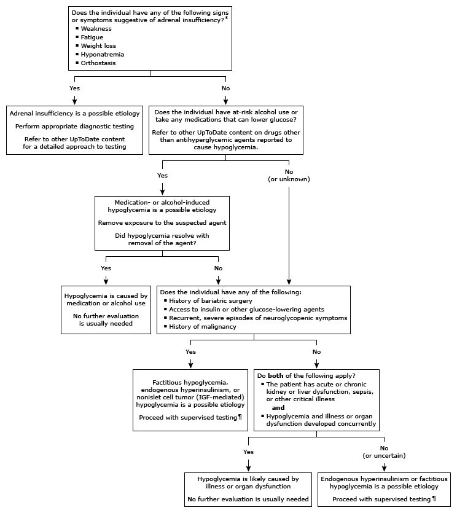

IGF: insulin-like growth factor.
* A personal or family history of autoimmunity also may suggest underlying adrenal insufficiency. Manifestations of adrenal insufficiency are reviewed in detail in other UpToDate content.
¶ Supervised testing can entail a mixed-meal test or supervised fast and should be performed under the care of an endocrinologist. These tests help determine whether hypoglycemia is caused by insulin or an IGF and are reviewed in detail in other UpToDate content.